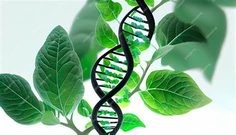
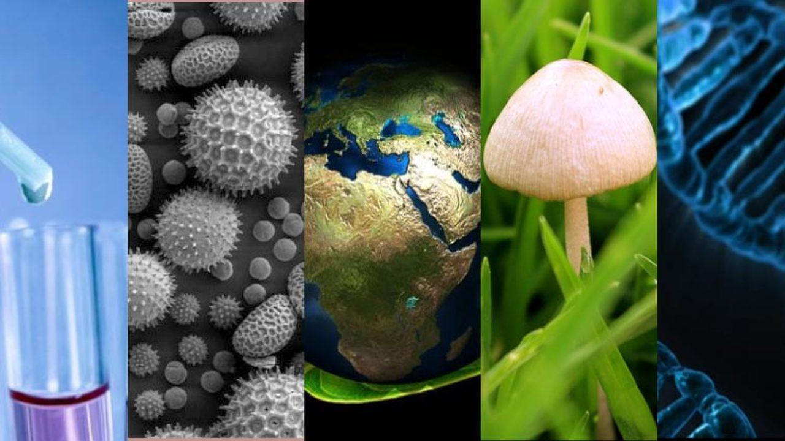

¿Que es?
La biología es la ciencia que se dedica al estudio de los seres vivos y los procesos vitales. Abarca una amplia gama de temas, desde la estructura y función de los organismos, hasta la evolución, ecología y genética. Los biólogos investigan cómo funcionan los organismos a nivel molecular y celular, cómo interactúan con su entorno y cómo se desarrollan y evolucionan a lo largo del tiempo. En resumen, la biología nos ayuda a entender la vida en todas sus formas y niveles de organización. 🧬🌿🦋
Tiene diferentes ramas
La biología es una ciencia vasta y diversa que se divide en varias ramas especializadas para estudiar diferentes aspectos de los seres vivos. Algunas de las principales ramas de la biología incluyen:
Biología molecular: Estudia la estructura y función de las moléculas esenciales para la vida, como el ADN, el ARN y las proteínas.
Genética: Se centra en la herencia y la variación de los organismos, explorando cómo se transmiten los genes de una generación a otra.
Ecología: Analiza las interacciones entre los organismos y su entorno, incluyendo los ecosistemas y las relaciones entre las especies.
Microbiología: Estudia los microorganismos, como bacterias, virus y hongos, y su papel en la salud y el medio ambiente.
Zoología: Se enfoca en el estudio de los animales, su comportamiento, anatomía, fisiología y evolución.
Botánica: Investiga las plantas, su estructura, función, crecimiento, reproducción y evolución.
Biología celular: Examina la estructura y función de las células, que son las unidades básicas de la vida.
Anatomía: Estudia la estructura de los organismos, especialmente la organización y disposición de sus partes.
Fisiología: Analiza las funciones y procesos vitales de los organismos vivos y sus órganos.
Evolución: Investiga los cambios en las características hereditarias de las poblaciones a lo largo del tiempo y cómo estos cambios han dado lugar a la diversidad de la vida.
Cada una de estas ramas ofrece una perspectiva única y complementaria sobre la vida y sus procesos.
